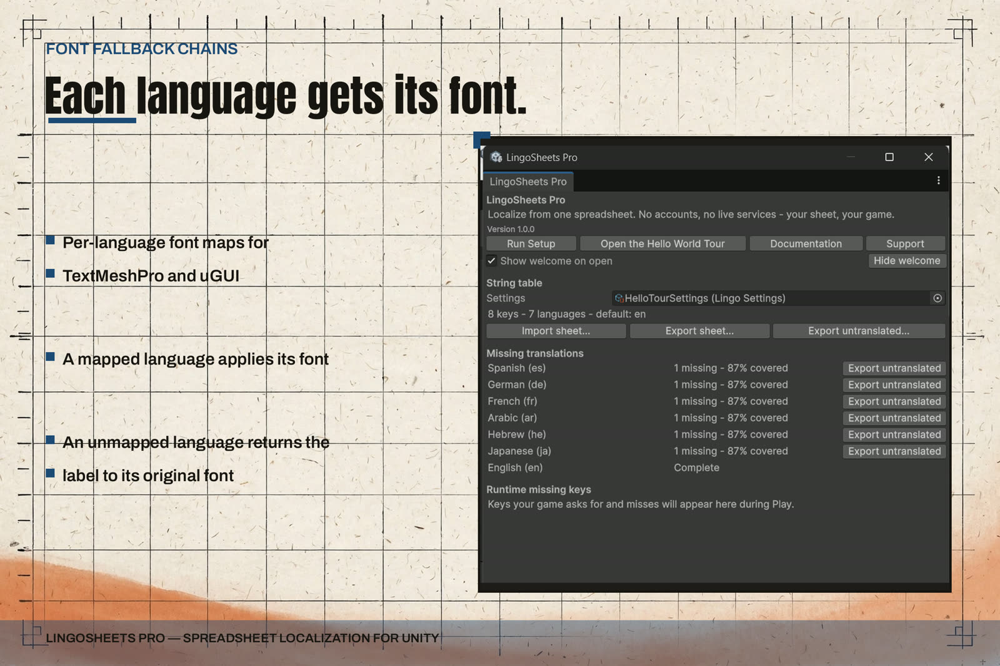

Fonts and Fallback Chains
Two different fallback ideas live in this product, and this page keeps them separate: the language fallback chain for text (Runtime Use) and the font handling described here.

Per-language font maps
The settings asset holds two font maps:
- A TextMeshPro map: language code to TMP font asset.
- A uGUI map: language code to Font.
Add an entry for each language whose script your default font does not cover well — Arabic and Japanese are the usual first entries. Leave a language unmapped when your existing font already serves it.
What a bound component does on a language switch
- It looks up the new language in the matching map (TextMeshPro map for a TextMeshPro component, uGUI map for a uGUI component).
- If a font is mapped, the component applies it.
- If no font is mapped, the component restores the font it had before any mapped font was applied — its original font.
So switching to a mapped language applies that language's font, and switching on to an unmapped language returns the label to the font you designed with. The component remembers its own starting font; you do not need to track it.
Scope, stated plainly
- Fallback here is per language and per component. This package contains no per-character font substitution engine.
- A TextMeshPro font asset's own internal fallback chain still applies inside whichever font asset is selected. That chain belongs to TextMeshPro and to your font assets, not to this package, and the two work together without configuration: this package chooses the asset, TextMeshPro handles glyphs the chosen asset lacks.
- If neither the mapped font nor the original font contains a glyph, what renders is decided by the text stack and the font assets, not by this package. The practical fix is to map a font that covers the script for that language.
Practical setup
- Open the settings asset created by Run Setup (under Assets/LingoSheets).
- For each language that needs a different font, add one entry to the TextMeshPro map and, if you use uGUI labels for that language, one entry to the uGUI map.
- Press Play, switch languages, and confirm each label changes font where mapped and returns to its original font where unmapped.
- For right-to-left languages, combine this page with the RTL and Arabic Shaping page: the same switch also applies direction and alignment handling, and Arabic shaping where it applies.